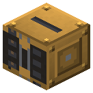
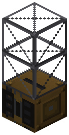
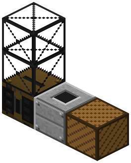
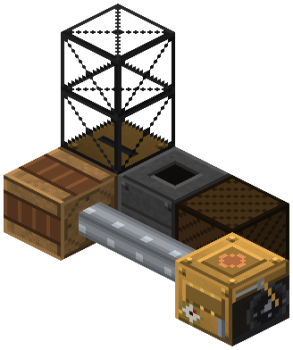
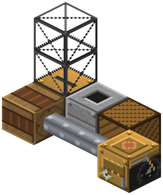

Паровой экскаватор


Копает квадрат 5x5 вокруг себя до дна. Секции стрелы сверху: до 4, 13x13, мощность x1.5 на секцию. Shift+пустая рука — копка/засыпка; люки вплотную; редстоун — пауза.
Паровой экскаватор (бронза) копает квадрат 5x5 вокруг себя — слой за слоем, с уровня машины до бедрока. Столб прямо под машиной не трогает: на нём она и стоит. Крутится от вала через шкив.
- Секции стрелы ставь столбиком сверху на экскаватор. Каждая расширяет квадрат на клетку во все стороны: 5 → 7 → 9 → 11 → 13x13 (максимум 4 секции, пятая и выше не работают).
- Мощность с каждой секцией ×1.5: 16 л.с. без стрелы, 24 / 36 / 54 / 81 л.с. с 1–4 секциями. Блоков в секунду столько же, сколько у голого экскаватора, — широкий слой просто снимается дольше.
- Нарастил или снял стрелу — экскаватор начинает проход заново сверху (пропущенное докопает).
- Выкопанное — в бункер, оттуда в люки выгрузки вплотную (всё / полезное / отвал) или трубами.
- Shift + пустая рука — копка / засыпка (порода снизу вверх, сверху — земля). Редстоун — пауза.
- Вода вычерпывается, на лаве встаёт. Сундуки, машины, валы и бедрок не трогает.
- Старый карьер BuildCraft убран: копать большие площади — только экскаватором.
Параметры
| Эпоха | 2 — Пар и механика |
|---|---|
| Многоблок | нет |
| Привод | вал |
| что делает | карьер квадратом по центру, всё подряд, в люки |
| энергия на входе | вал 16 × 1.5^секций |
| из чего | ведро, решётка, бронзовые шестерни и листы, железный вал IC2, железные листы |
| л.с. | 16 × 1.5^секций |
Числа
| экскаватор | 16 л.с. |
|---|---|
| экскаватор: предел секций стрелы (5x5 -> 13x13) | 4 секций |
| экскаватор: прирост радиуса на секцию | 1 клеток |
| экскаватор: множитель мощности на секцию | 1.5 |
Кто кормит
- вал ← Паровая машина, Паровая машина высокого давления (трансмиссия)
Кого кормит
- машины Zavod её продукт не едят
Как устроено (из кода)
Паровой экскаватор (бронза, карьер 5x5 по центру): крутится от вала через шкив, вынимает ВСЁ слой за слоем вокруг себя, с уровня машины до дна; столб под машиной не трогает. Секции стрелы столбиком сверху расширяют квадрат (A6): бронза до 4 секций 5 -> 13, сталь до 3 секций 9 -> 21; мощность x1.5 на секцию, блоков в секунду - как у базы. Выборочно не копает. Выкопанное - в бункер (9 слотов), оттуда - в люки выгрузки рядом (каждый люк со своим режимом: всё / полезное / отвал) или трубами/воронкой прямо из бункера. Бункер полон - стоит. Вода вычерпывается (дольше), на лаве встаёт. Сундуки, машины, валы и бедрок не трогает. Режим "засыпка" (Shift + пустая рука): сыплет породу из загрузочных слотов (10-18) обратно в карьер снизу вверх, верхний слой - земля (плодородный слой), если есть. Редстоун-сигнал - пауза. Слоты: 0-8 бункер (выход), 9-17 засыпка (вход: только порода).
Сборка
Shift + пустая рука — копка / засыпка. Редстоун — пауза.
Экскаватор: копает квадрат 5x5 вокруг себя слоями до дна, свой столб не трогает.

Секции стрелы столбиком сверху (до 4, тут 2): квадрат +2 с каждой, мощность x1.5.

Люк выгрузки вплотную, лицом — в сундук или вагонетку на рельсах.

Привод: шкив сбоку, вал — к паровой машине.

сундук или другой инвентарь (не наш блок)
Бледное — поставлено на прошлых шагах.